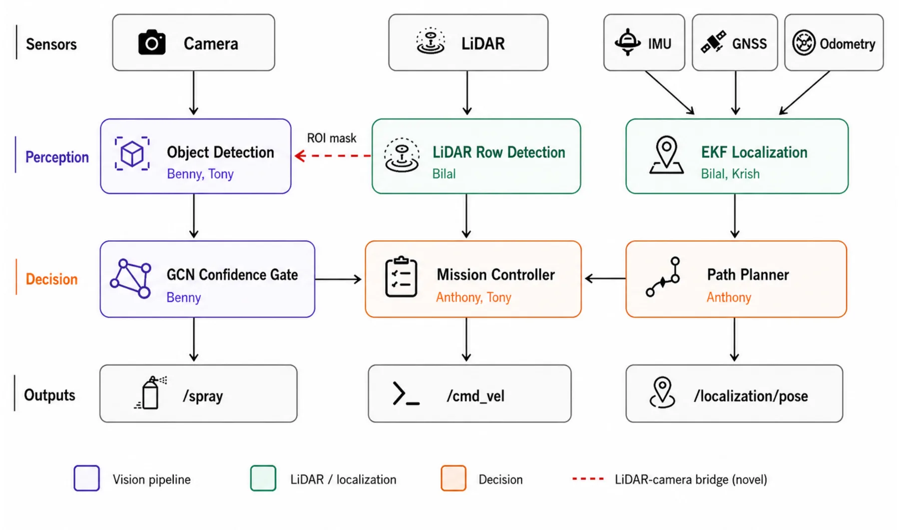
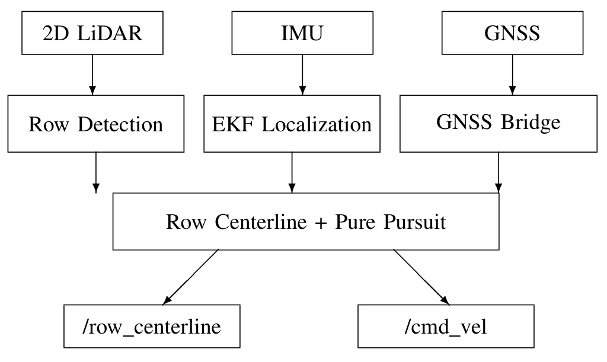
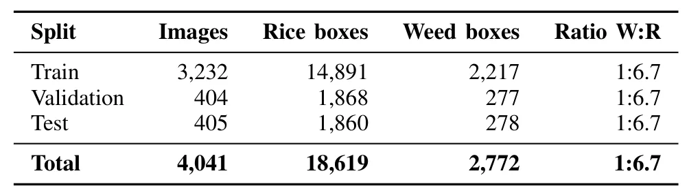
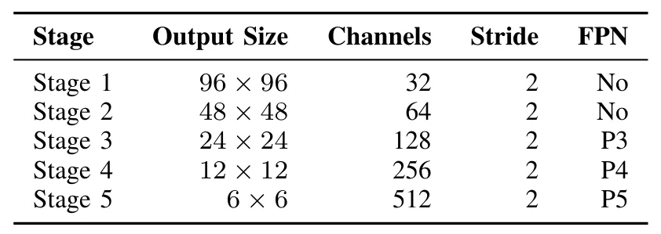
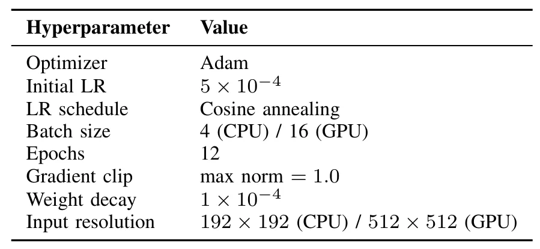
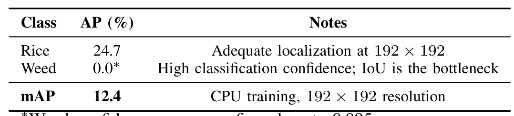
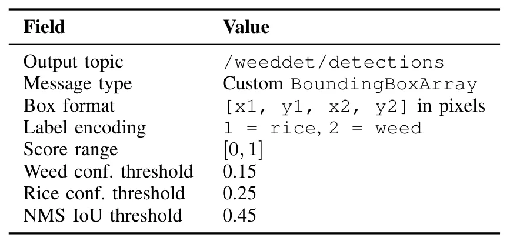
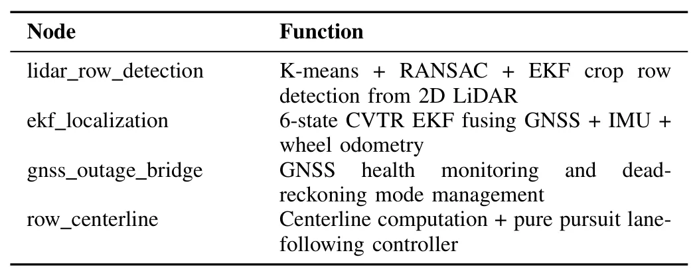

自主农业拖拉机：面向精准水稻种植的杂草检测与 LiDAR 导航融合Autonomous Agricultural Tractor: Integrated Weed Detection and LiDAR Navigation for Precision Paddy Farming
包含 GNSS/IMU/轮速计融合与 LiDAR—相机工程集成，场景具体；但主要证据来自仿真和检测置信度，缺少真实田间轨迹误差、定位退化对作业结果的量化。
一句话工作总结
以零额外硬件成本把导航 LiDAR 融入农田视觉检测，并用 GNSS/IMU/轮速计 EKF 跨越短时 GNSS 中断。
摘要
AgriNav 是一个面向稻田自主作业的 ROS 耦合系统，包含杂草检测、保护水稻类别的置信度门控、融合 GNSS/IMU/轮速计的六状态扩展卡尔曼滤波器，以及利用导航 LiDAR 约束感兴趣区域、投影到世界坐标、地面滤波和双向置信度融合的 LiDAR—相机桥接模块。仿真结果覆盖 20 秒 GNSS 中断期间的连续位置跟踪、作物行检测和多来源图像检测。
Site-specific weed management in paddy farming offers substantial reductions in herbicide use over conventional broadcast spraying, but field deployment has been limited by three persistent challenges: robust crop-row navigation under canopy where GNSS degrades, real-time visual discrimination between rice and morphologically diverse weeds, and the asymmetric cost of misclassifying rice as weed, which is irreversible. This paper presents AgriNav, an integrated autonomous tractor system built around four ROS-coupled modules: a custom PyTorch reimplementation of WeedDet for rice detection, a parallel lightweight 1.68M-parameter CNN-FPN variant with asymmetric class weighting, an inverted-logic discrimination module that protects the rice class through a hardcoded confidence-gate veto, and a 6-state constant-velocity-turn-rate Extended Kalman Filter fusing GNSS, IMU, and wheel odometry with three-level outage bridging. Our primary system-level contribution is a four-mechanism LiDAR-camera fusion bridge that uses the navigation LiDAR for region-of-interest constraint, world-coordinate projection, ground-plane filtering, and bidirectional confidence fusion at zero additional hardware cost. Simulation experiments demonstrate continuous position tracking through a 20-second GNSS outage, crop row detection confidence above 0.9 throughout operation, and rice-detection confidences from 0.32 to 0.95 across paddy, aerial, and post-flood imagery. The LiDAR ROI constraint reduces detection inference region by an estimated 30 to 50 percent.
中文解读摘录
- 论文：arXiv:2608.19004 · PDF
- 作者：Benjamin Merryman-Smith 等
- 核心方法：用 LiDAR 做检测 ROI、世界坐标投影和地面滤波，并与相机置信度双向融合；导航侧使用 GNSS/IMU/轮速计 EKF，报告了 20 秒 GNSS 中断仿真。
- 判断：是今天最贴近工程融合的案例之一，但主要证据来自仿真和检测置信度，尚缺真实田间轨迹误差、失锁恢复和长期漂移指标。
- 评分：7.2/10。
图表/页面预览
{kind=link}

{kind=link}

{kind=link}

{kind=link}

{kind=link}

{kind=link}

{kind=link}

{kind=link}
